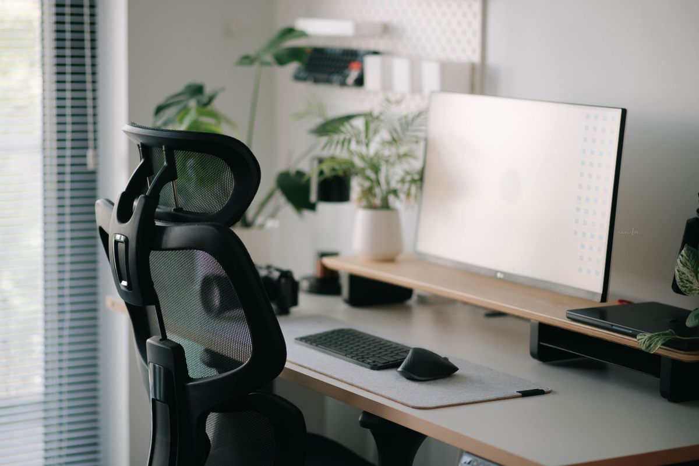
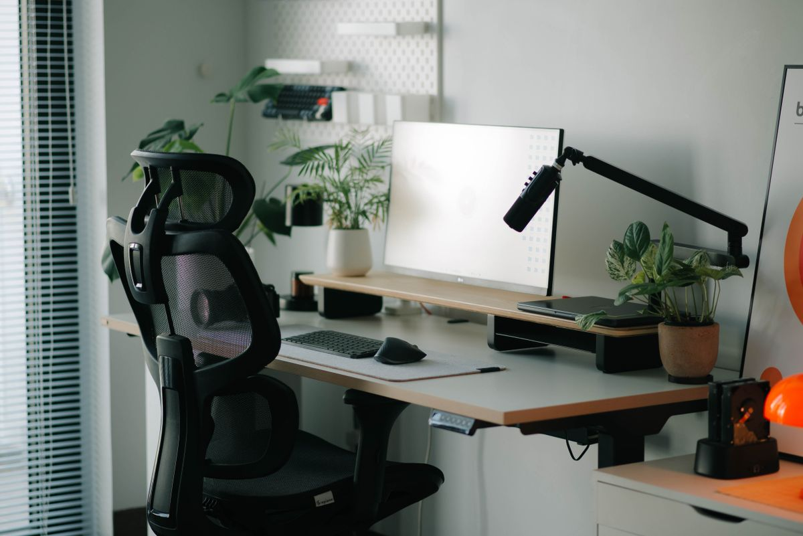

เก้าอี้ทำงานเพื่อสุขภาพ เลือกอย่างไรให้นั่งได้ทั้งวันโดยไม่ปวดหลัง
คู่มือเลือกเก้าอี้ทำงานเพื่อสุขภาพ (Ergonomic Chair) ที่รองรับสรีระ ลดอาการปวดหลังจากการนั่งทำงานทั้งวัน พร้อมคุณสมบัติที่ควรมีและเกณฑ์การเลือกซื้อ
อัปเดต กรกฎาคม 2026
คนทำงานออฟฟิศหรือ Work From Home ส่วนใหญ่นั่งอยู่หน้าจอวันละ 8-10 ชั่วโมงโดยไม่รู้ตัวว่าเก้าอี้ที่นั่งอยู่ทุกวันนี้เองที่เป็นต้นตอของอาการปวดหลังส่วนล่าง ปวดสะโพก และไหล่ห่อที่สะสมมานาน หลายคนพยายามแก้ปัญหาด้วยการยืดเส้นหรือนวด แต่ลืมมองข้ามสิ่งที่ใกล้ตัวที่สุดคือเก้าอี้ที่รองรับร่างกายอยู่ทุกวัน
เก้าอี้เพื่อสุขภาพ หรือ Ergonomic Chair ถูกออกแบบมาให้รองรับสรีระตามหลักการยศาสตร์โดยเฉพาะ ไม่ใช่แค่เบาะนุ่มแล้วจบ แต่ต้องปรับได้หลายจุดเพื่อให้เข้ากับรูปร่างและท่านั่งของแต่ละคน บทความนี้จะพาไปดูว่าเก้าอี้ทำงานที่ดีควรมีคุณสมบัติอะไรบ้าง พร้อมตัวเลือกที่น่าสนใจสำหรับคนที่กำลังมองหาเก้าอี้ตัวใหม่
ทำไมเก้าอี้ธรรมดาถึงทำร้ายหลังโดยไม่รู้ตัว

เก้าอี้ทั่วไปที่ไม่ได้ออกแบบมาเพื่อการนั่งทำงานนาน ๆ มักมีปัญหาหลักคือไม่มีส่วนรองรับหลังส่วนล่าง (Lumbar Support) ทำให้กระดูกสันหลังโค้งงอผิดรูปเมื่อนั่งนาน ๆ ร่างกายจะเอนไปข้างหน้าโดยอัตโนมัติเพื่อชดเชย ส่งผลให้กล้ามเนื้อคอและบ่าต้องทำงานหนักกว่าปกติ นานวันเข้าจึงกลายเป็นอาการปวดเรื้อรังที่รักษายาก
นอกจากนี้เก้าอี้ที่ปรับความสูงไม่ได้ หรือที่วางแขนไม่ได้มาตรฐาน ก็ทำให้ท่านั่งผิดเพี้ยนไปทีละนิด สะสมเป็นความเสียหายระยะยาวต่อข้อมือ ไหล่ และหลังโดยที่เราไม่ทันสังเกต
คุณสมบัติที่เก้าอี้เพื่อสุขภาพที่ดีควรมี

1. ตัวรองรับหลังส่วนล่าง (Lumbar Support) ที่ปรับได้
ส่วนนี้สำคัญที่สุด เพราะช่วยดันหลังส่วนล่างให้โค้งตามธรรมชาติ ลดแรงกดที่หมอนรองกระดูก ควรเลือกรุ่นที่ปรับระดับความสูงและความลึกของตัวดันหลังได้ เพื่อให้พอดีกับสรีระของแต่ละคน
2. เบาะนั่งปรับความลึกได้
คนตัวเล็กและตัวใหญ่ต้องการความลึกของเบาะไม่เท่ากัน เก้าอี้ที่ปรับความลึกเบาะได้จะช่วยให้ขาพับได้มุม 90 องศาพอดี ไม่กดทับด้านหลังเข่า
3. ที่วางแขนปรับได้หลายทิศทาง
ที่วางแขนที่ปรับสูงต่ำ ปรับมุมเข้าออก และเลื่อนหน้าหลังได้ ช่วยให้ไหล่ผ่อนคลายขณะพิมพ์งาน ลดอาการเมื่อยบ่าได้มาก
4. พนักพิงปรับเอนได้พร้อมล็อกมุม
การเอนพักหลังเป็นระยะช่วยลดแรงกดสะสม ควรเลือกรุ่นที่ล็อกมุมเอนได้หลายระดับ ไม่ใช่แค่เอนได้อย่างเดียวโดยไม่มีจุดล็อก
5. วัสดุระบายอากาศ
เบาะแบบตาข่าย (Mesh) ช่วยระบายความร้อนได้ดีกว่าเบาะหนังหรือฟองน้ำ เหมาะกับการนั่งนานในสภาพอากาศร้อนแบบบ้านเรา
ตัวเลือกเก้าอี้เพื่อสุขภาพที่น่าสนใจ
เก้าอี้ Ergonomic แบบ Mesh ปรับได้เต็มรูปแบบ
เหมาะกับคนที่นั่งทำงานทั้งวัน ปรับได้ทั้งพนักพิงหลัง ที่วางแขน และความลึกเบาะ ตัวเบาะระบายอากาศได้ดี ไม่อับชื้นแม้นั่งนานหลายชั่วโมง
เก้าอี้เพื่อสุขภาพพร้อมหมอนรองคอในตัว
เหมาะกับคนที่มีปัญหาปวดคอร่วมด้วย มาพร้อมหมอนรองคอปรับมุมได้ ช่วยพยุงศีรษะขณะนั่งพักหรือประชุมนาน ๆ
เก้าอี้ทำงานทรงประหยัดพื้นที่สำหรับห้องขนาดเล็ก
สำหรับคนที่มีพื้นที่จำกัดแต่ไม่อยากลดทอนเรื่องสรีระศาสตร์ ตัวเก้าอี้มีขนาดกะทัดรัดแต่ยังคงฟังก์ชันปรับหลังและที่วางแขนไว้ครบ
หมอนรองหลังเสริม (Lumbar Cushion) สำหรับเก้าอี้ที่มีอยู่แล้ว
สำหรับใครที่ยังไม่พร้อมเปลี่ยนเก้าอี้ใหม่ อุปกรณ์เสริมนี้ช่วยเพิ่มการรองรับหลังส่วนล่างให้เก้าอี้ตัวเดิมได้ในราคาที่ประหยัดกว่ามาก
เกณฑ์การเลือกซื้อเก้าอี้เพื่อสุขภาพ
ก่อนตัดสินใจซื้อ ควรพิจารณาปัจจัยต่อไปนี้
ขนาดตัวและสรีระของผู้ใช้ เก้าอี้แต่ละรุ่นมีข้อจำกัดเรื่องน้ำหนักและความสูงที่รองรับได้ ควรเช็กสเปกให้ตรงกับสรีระตัวเองก่อนซื้อ
พื้นที่วางเก้าอี้ เก้าอี้เพื่อสุขภาพส่วนใหญ่มีขนาดใหญ่กว่าเก้าอี้ทั่วไป ควรวัดพื้นที่โต๊ะทำงานให้แน่ใจว่าเข้ากันได้
ระยะเวลารับประกัน เก้าอี้ที่ดีมักมีโครงสร้างและกลไกที่ซับซ้อน การรับประกันที่ยาวนาน (อย่างน้อย 2-3 ปี) เป็นตัวชี้วัดความมั่นใจของผู้ผลิตต่อคุณภาพสินค้า
ความสามารถในการปรับแต่ง ยิ่งปรับได้หลายจุดเท่าไหร่ ยิ่งเข้ากับสรีระของผู้ใช้ได้ดีเท่านั้น แต่ก็ต้องแลกกับราคาที่สูงขึ้นตามไปด้วย ควรเลือกให้เหมาะกับงบประมาณและความจำเป็นจริง ๆ
ลองนั่งก่อนตัดสินใจ หากเป็นไปได้ควรลองนั่งจริงอย่างน้อย 10-15 นาทีก่อนซื้อ เพื่อเช็กว่าตำแหน่งรองรับหลังตรงกับสรีระของเราหรือไม่
สรุป
เก้าอี้เพื่อสุขภาพไม่ใช่แค่ของฟุ่มเฟือย แต่เป็นการลงทุนระยะยาวเพื่อสุขภาพหลังและคอที่ต้องแบกรับการนั่งทำงานหลายชั่วโมงต่อวัน การเลือกเก้าอี้ที่ปรับได้ตรงกับสรีระ มีตัวรองรับหลังส่วนล่างที่ดี และระบายอากาศได้ จะช่วยลดอาการปวดเมื่อยสะสมและทำให้ทำงานได้อย่างมีประสิทธิภาพมากขึ้นในระยะยาว หากงบประมาณจำกัด การเริ่มต้นด้วยหมอนรองหลังเสริมก็เป็นทางเลือกที่คุ้มค่าไม่แพ้กัน
บทความนี้มีลิงก์ affiliate เมื่อคุณซื้อผ่านลิงก์ เราอาจได้รับค่าคอมมิชชั่นโดยที่คุณไม่ต้องจ่ายเพิ่ม